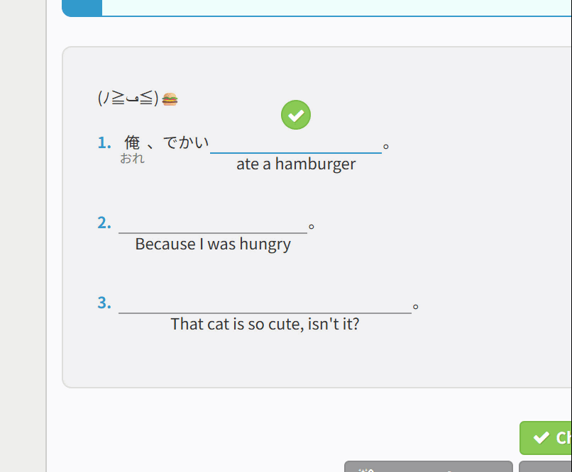

To type in Japanese on your computer or phone, you first need to install a Japanese Input Method also called a "Japanese IME" for short. This will let you type Japanese characters without actually using a physical Japanese keyboard.

A lot of our exercises require typing in Japanese, so it is highly recommended that you install one. There's two types of IMEs: Romaji Input and Kana. We recommend using Romaji Input because it's the easiest one for new learners to use, especially on computers.
Use the table below to quickly jump to the installation instructions for the platform that you're studying Japanese on.
| Platforms |
If you already have a Japanese IME or keyboard, feel free to move onto the Hiragana section to start learning about Hiragana.
Windows
To install a Japanese IME on Windows:
- Click the Windows Icon > Settings (cog icon) or press
Windows Key+I - Go to Time & Language > Typing > Language & Region.
- Under Preferred languages click the Add a language button.
- Search for Japanese, select it, and then click next.
- Check Install language pack, and finally click Install to install it.
- Once installed, under Language & Region click the 3 dots on the Japanese language pack, and select Language options.
- Scroll down to the Keyboards section and click Add a keyboard.
- Select Japanese, choose Microsoft IME, and then click save.
Once installed, you should see ENG or something similar in taskbar in the bottom right. Click this and select Japanese to switch to your Japanese keyboard. It should display an "A" in the taskbar. Right click this "A" to change between Alphanumeric characters, Hiragana, and Katakana. You can also quickly switch between Alphanumeric and Hiragana by using the ALT+` shortcut. For more tips on using the IME, please see this page.
Now that you have your Japanese IME installed, head on over to the Hiragana section to start learning about Hiragana!
Mac
To install a Japanese IME on Mac:
- Click the Apple menu > System Settings/Preferences.
- Select Keyboard, click Input Sources, and then click the "+" button.
- Scroll down and choose Japanese.
- Select Japanese – Romaji and click add.
Once installed, you can press CONTROL+SPACE to switch between languages or click the input menu in the top-right of your screen. For more tips on using the IME, please see this page.
Now that you have your Japanese IME installed, head on over to the Hiragana section to start learning about Hiragana!
Linux
To install a Japanese IME on Linux, follow the instructions below to install Mozc for your distro.
Ubuntu/Debian
-
Open your terminal and run the following to install Mozc.
sudo apt update
sudo apt install ibus ibus-mozc - Then reset IBus
ibus restart - Now go to Settings > Keyboard > Input Sources.
- Click the "+", then select Japanese and choose Japanese (Mozc).
Arch Linux
-
Open your terminal and run the following to install Mozc.
sudo pacman -S ibus ibus-mozc -
Then execute:
export GTK_IM_MODULE=ibus
export QT_IM_MODULE=ibus
export XMODIFIERS=@im=ibus - Add
ibus-daemon -drxto your startup (e.g.,.xprofileor your desktop autostart).
Fedora
-
Open your terminal and run the following to install Mozc.
sudo dnf install ibus-mozc - Then go to Settings > Keyboard > Input Sources.
- Add Japanese (Mozc).
Fcitx
-
Open your terminal and run the following to install Mozc.
sudo apt-get install fcitx-mozc - Then execute:
export GTK_IM_MODULE=fcitx
export QT_IM_MODULE=fcitx
export XMODIFIERS=@im=fcitx - Finally log out and log back in.
If the install was successful, Mozc should now be displayed in the bottom right of your toolbar! By default, you can use CTRL+SPACE to switch between alphanumeric and kana. If you want to change that, right click Mozc in the toolbar, then go to Global config and edit Trigger Input Method to whatever you like, such as ALT+` which is another common combo for toggling the IME. For more tips on using the IME, please see this page.
Now that you have your Japanese IME installed, head on over to the Hiragana section to start learning about Hiragana!
Android
To install a Japanese IME on Android there are two methods:
Native
Most phones, such as the latest Samsung models come with native Japanese keyboard support that can be enabled in your settings.
- Go to Settings > General Management > Samsung Keyboard settings > Language and Types.
- Click Manage input languages then turn on 日本語.
- When using your keyboard, click the globe key to switch to Japanese input.
If you want to change the Input type, go back to Language and Types and click on 日本語. By default you should be on Qwerty which is Romaji Input. On the phone, I usually prefer 3x4 flick for typing Japanese as it is much faster. Feel free to try it out and see which method of typing Japanese you like more for your phone.
Gboard
An alternative option, especially if your device doesn't natively support a Japanese keyboard, is Gboard by Google.
- Open the Play Store
- Search Gboard and click Install.
- For General Devices: Go to Settings > System > Languages & input > On-screen keyboard > Manage keyboards and turn on Gboard.
For Samsung: Go to Settings > General Management > Keyboard list and default and turn on Gboard. - Now open Gboard, go to Languages, click Add keyboard, search Japanese, and click 日本語 to install the Japanese language pack.
- Choose the 12キー and QWERTY keyboard, then click Done. I prefer 12キー for the phone as it's much faster to type, but if you don't like it you can fallback to the QWERTY Romaji keyboard.
- When using your keyboard, click the globe key to switch to Japanese input. If you don't see it, however, try clicking the keyboard icon in the bottom right to change to Gboard.
Clicking the globe key will let you cycle between Alphanumeric, 12キー, and the Romaji keyboard. If you don't like a certain keyboard you can remove it by clicking the cog icon to go to settings while using the keyboard, then go to languages, click QWERTY or 12キー, then click them again in the page that shows up to remove them. Remember to click Done to save your changes! For more tips on using the IME, please see this page.
Now that you have your Japanese IME installed, head on over to the Hiragana section to start learning about Hiragana!
iOS
To install a Japanese IME on iOS:
- Open the Settings app, go to General, then select Keyboard.
- Click Keyboards and then select Add New Keyboard.
- Scroll down and select Japanese.
- Choose either Kana or Romaji, or both, then click Done. You can always disable the one you don't like later.
- When using your keyboard, click the globe key to switch to Japanese input.
If you like the Kana keyboard, I recommend enabling Flick Input for faster typing. You can enable this via settings while using the Kana keyboard. For more tips on using the IME, please see this page.
Now that you have your Japanese IME installed, head on over to the Hiragana section to start learning about Hiragana!